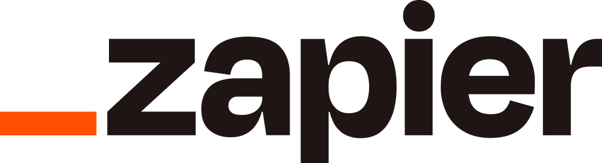
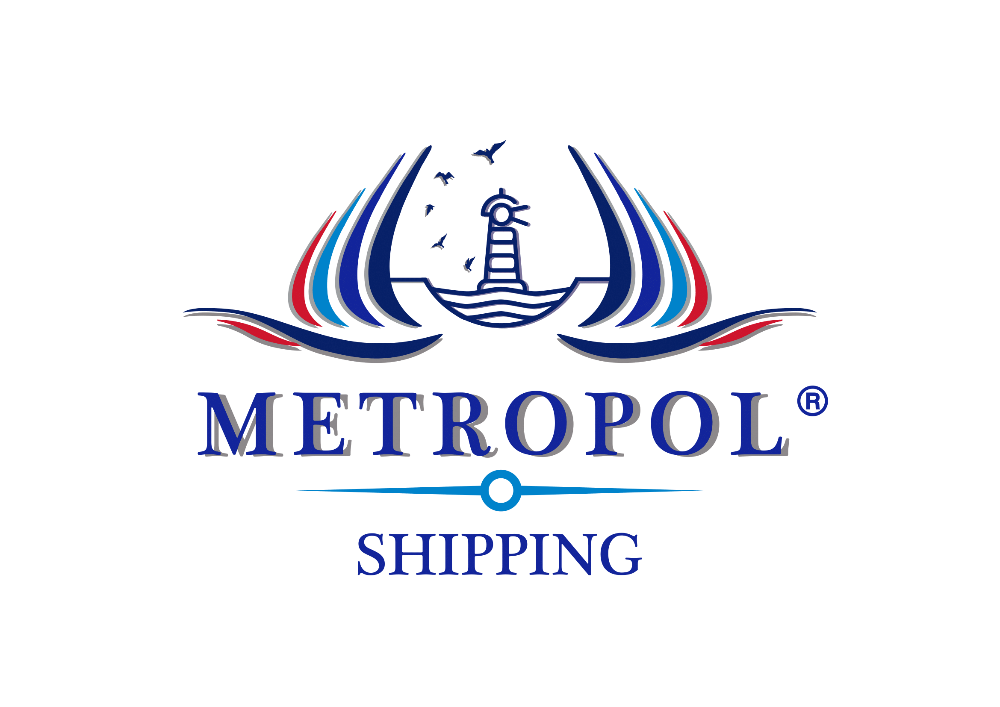
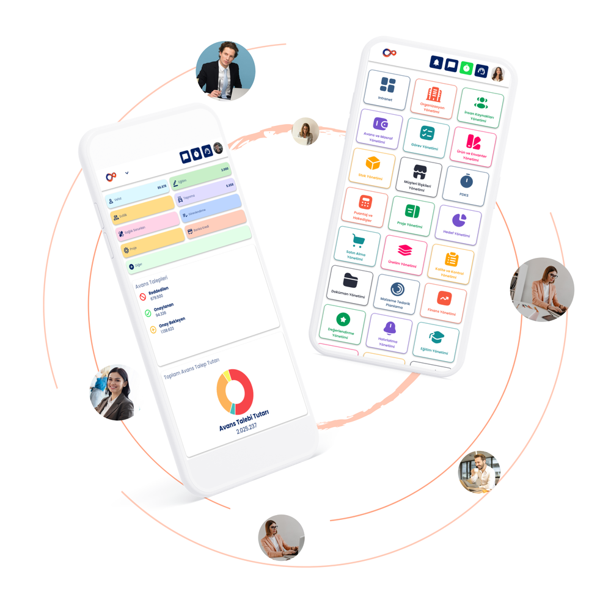

İş Akışlarınızı Dönüştürün
Geleceği Şimdi Yaşayın!
Yazılımımız, iş süreçlerinin stratejik hedeflere uygunluğunu izlemek ve değerlendirmek için güçlü analitik ve raporlama araçları sunar. Bu, yöneticilere iş süreçlerini daha etkin bir şekilde yönetme ve stratejik kararlar alma yeteneği sağlar.


Flowick BPM Sen Neredeysen,
Hemen Yanı Başında!
Uygulamayı kullanmaya başlamak için hemen indir!

Biz Kimiz?
Biz, iş dünyasının zorluklarına çözüm sunan bir teknoloji şirketiyiz. Süreçlerinizi optimize ederek işinizi dönüştürmek için en yeni teknolojileri ve yenilikçi çözümleri bir araya getiriyoruz. Çalışanlarımızın farklı bakış açıları ve uzmanlıklarıyla bir araya gelerek, yaratıcı çözümler üretiyoruz. Müşteri odaklı yaklaşımımızla, iş akışlarınızı etkin bir şekilde yönetmenize ve rekabet avantajı elde etmenize yardımcı oluyoruz. İşinizi bir adım öteye taşımak, verimliliği artırmak ve başarıyı garantilemek için bizimle birlikte ileriye yol alın.
Daha Çok Teknoloji İçin Sıra Sizde !
Sektörün öncü firmaları, kurumlarının ihtiyaçlarına göre özelleştirilen Flowick BPM'i kullanarak insan kaynağını teknolojiyle güçlendiriyor.
Güvenlik
Şirketimiz, endüstri standartlarına uygun güvenlik protokollerini benimser ve çeşitli yöntemler kullanarak verilerin güvenliğini sağlar. Ayrıca, yetkilendirme seviyeleri ve erişim kontrolleri, sadece yetkili kullanıcıların belirli süreçlere erişebilmesini sağlayarak veri güvenliğini artırır.
Verimliliği Artırma
FlowickBPM, iş süreçlerini analiz, optimize ve otomatize ederek verimliliği artırır. Gelişmiş iş akışları ve süreç otomasyonu, tekrarlayan görevleri azaltır ve insan hatalarını en aza indirir.
Hızlı Uyum ve Esneklik
İş dünyası sürekli değişiyor ve FlowickBPM, şirketlerin hızlı bir şekilde değişen koşullara uyum sağlamasını kolaylaştırır. Esnek iş süreçleri ve otomatizasyon, şirketlerin pazar değişikliklerine ve müşteri taleplerine daha hızlı yanıt vermesine olanak tanır.
Stratejik Yönetim
Yazılımımız, iş süreçlerinin stratejik hedeflere uygunluğunu izlemek ve değerlendirmek için güçlü analitik ve raporlama araçları sunar. Bu, yöneticilere iş süreçlerini daha etkin bir şekilde yönetme ve stratejik kararlar alma yeteneği sağlar.

İşlerinizi, Flowick BPM ile Tek Ekrandan Takip Edin!
Yenilikçi yazılım ürünümüz, iş süreçlerinizi maksimum verimlilikle yönetmenizi sağlayan kapsamlı bir çözüm sunuyor. Tüm görevleri ve süreçleri tek bir kullanıcı dostu ekran üzerinden takip edebilme özelliği, iş akışlarınızı kolaylıkla yönetmenize olanak tanır. Hem mobil hem web platformları üzerinden erişilebilir olması, ekiplerinizin her an her yerden etkileşimde bulunmasını sağlar.. Bu yenilikçi çözüm, iş akışlarınızı yönetirken zamandan ve kaynaklardan tasarruf etmenize yardımcı olacak, iş süreçlerinizi daha etkili ve yönetilebilir hale getirecek bir araçtır.
%64
Verimlilik Artışı
Harita bazlı rut planlama ile %64 verimlilik artışı
%97
Zaman Tasarrufu
Web tabanlı dijital arşiv ile verilere erişimde lokasyon özgürlüğü ve %97 zaman kazancı.
%82
Hata Azalışı
QR kodlu iş yönetimi sayesinde %82 hata azalışı
%32
İş Yükünde Azalma
Tüm işlemlerin mobil uygulamada da yürütülebilmesi ile operasyonel iş yükünde %32 azalış.
%35
Stratejik Karar
İndeks yönetimi yapısı sayesinde stratejik karar alış hızında %35 artış
Bizden Haberler
Aker OSGB ile Eğitim
Flowick Teknoloji ekibi olarak Aker OSGB ile personel eğitimi için Gebze'de buluştuk. Keyifli bir eğitim süreci sonunda İK Yönetimi Modülü kullanımı konusunda eğitimimizi tamamlamış olduk.
Tüm işlemlerin mobil...
Tüm işlemlerin mobil uygulamada da yürütülebilmesi ile operasyonel iş yükünde %32 azalış.
Sıkça Sorulan Sorular
FlowickBPM, iş süreçlerinizi planlama, takip ve raporlama adımlarıyla uçtan uca yönetmenizi sağlayan bulut tabanlı bir iş akışı (BPM) yazılımıdır. Web ve mobil üzerinden erişilebilir.
Manuel ve dağınık süreçleri tek bir platformda toplayarak verimliliği artırır, hata oranını azaltır ve yönetime gerçek zamanlı görünürlük sağlar.
İnsan kaynakları, satın alma, stok ve envanter, proje, görev, müşteri ilişkileri, üretim, kalite kontrol, doküman, finans ve lojistik gibi birçok süreç FlowickBPM modülleriyle yönetilebilir.
Kurulum gerektirmeyen bulut tabanlı bir çözümdür; ekibimiz ihtiyaçlarınıza göre kurulum ve entegrasyon sürecinde size eşlik eder.
Yetkilendirme seviyeleri, erişim kontrolleri ve endüstri standartlarına uygun güvenlik protokolleri ile verileriniz korunur.